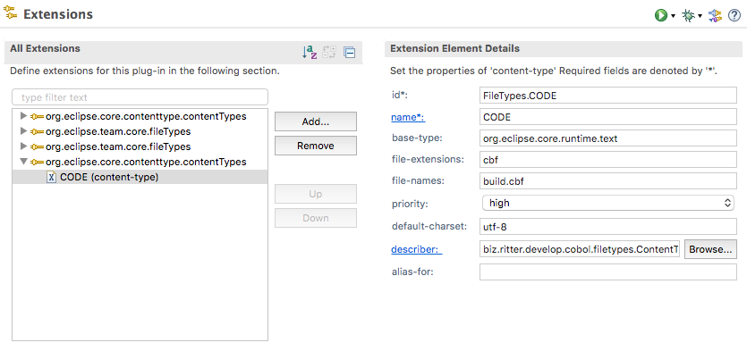
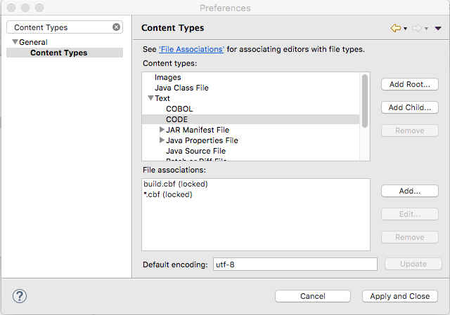
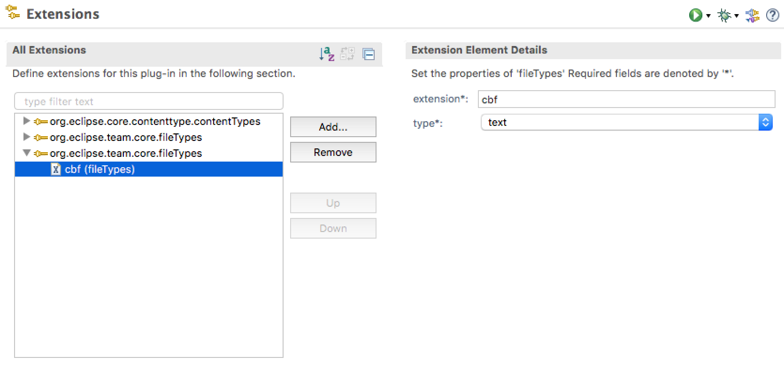
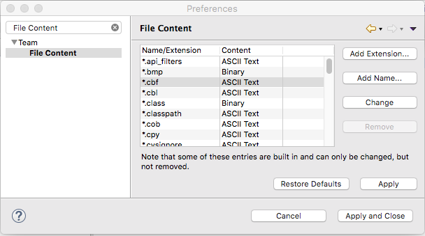

Für eine IDE benötigen wir auch einen passenen Dateityp (FileType). Diesen wollen wir entsprechend
registrieren, einem Editor zuordnen und mit einem Icon versehen.
Eclipse FileType
- Erstellen eines PlugIn Projektes.
- plugin.xml bearbeiten und die Extensions
org.eclipse.core.contenttype.contentTypes hinzufügen.
Wir definieren hier, ob unser Dateityp textorientiert ist und auch welches Encoding er
nutzt.
Beispielhaft fügen wir den Dateityp mit der Endung ctf und
einem Defaultdateinamen ein.

Nach dem Start der IDE können wir als Ergebnis sehen, dass wir einen FileType CODE eingeführt hat mit
unserer Definition der Defaultdateiendungen und -namen. Warum ist dies interessant? Diese Defaultbezeichnungen
sind nicht durch den Anwender änderbar, und wir können uns später auf diese -naja- verlassen.
Und so sehen die Eigenschaften dann aus:

- plugin.xml bearbeiten und die Extensions
org.eclipse.team.core.fileTypes hinzufügen.
Wir definieren hier, ob unser Dateityp textorientiert oder binär ist.
Dies wiederholen wir beliebig oft.
Beispielhaft fügen wir den Dateityp mit der Endung ctf ein.

Nach einem Start der IDE können wir als Ergebnis in den Eigenschaften sehen, dass ctf Dateien bei
uns Textdatei sind. Warum ist dies interessant? Source Code Managementsystem wie SVN, GIT, ...
finden dies nützlich um uns zu unterstützen.
Und so sehen die Eigenschaften dann aus:

Mit diesen Schritten können wir einen neuen Dateityp registrieren.